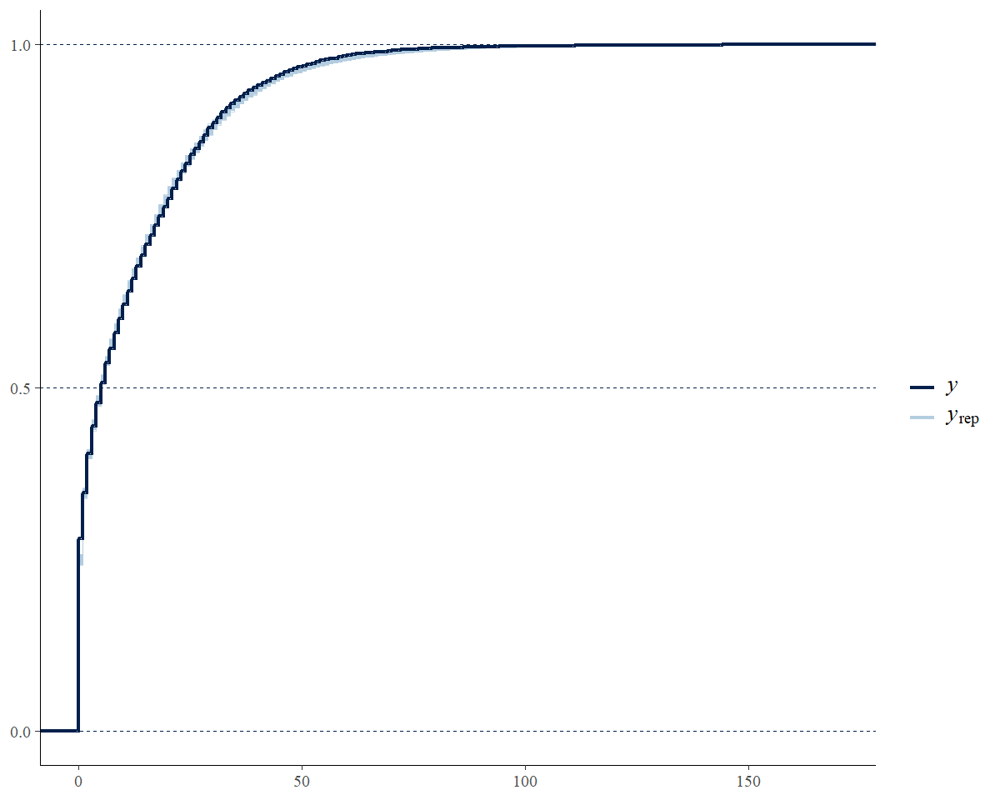
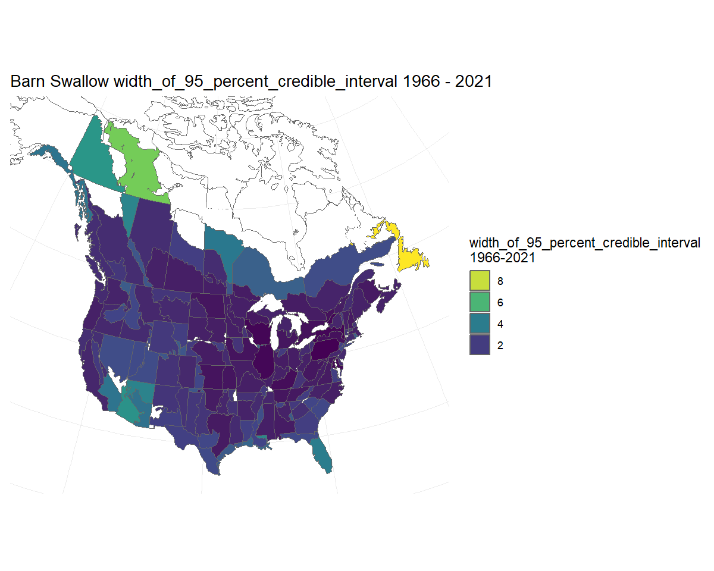
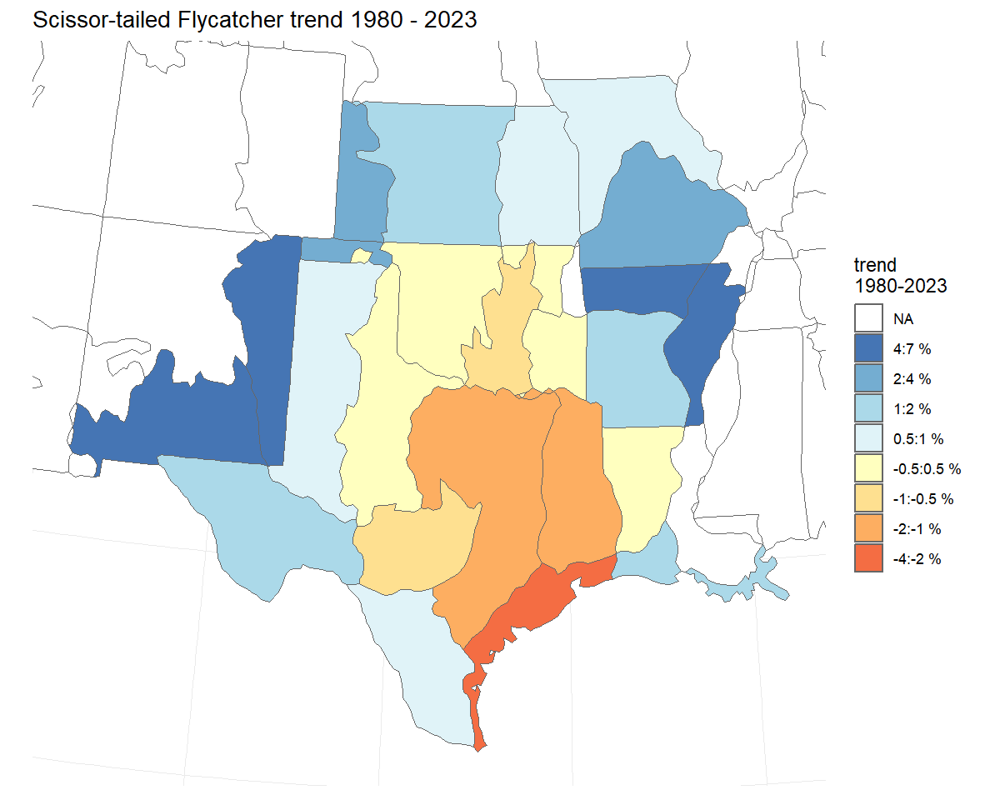

library(bbsBayes2)
library(dplyr)
library(ggplot2)
library(sf)
library(patchwork)
library(bayesplot) #to visually check convergence
library(tidyr)Some more advanced options
For most of these examples, we will be using a series of saved model outputs. These model outputs can be downloaded from this Google Drive. In the example code here, we have unzipped these saved model outputs and stored the .rds files in a local sub-directory called output.
Posterior Predictive Checks
Posterior predictive checks are graphical comparisons of the model-based predictions of data and the observed data. They are best done in R, after fitting the model. It is certainly possible to modify the Stan code to include posterior predictions of the individual BBS counts. However, using Stan to generate these predicted counts will almost double the size of the saved model object.
To generate the posterior distributions of predicted counts, you will
need to extract the posterior samples of the parameter E in
the bbsBayes2 models (these represent the expected values on the
log-scale). Also, if the model used the negative binomial error
distribution, then you will also need to extract the posterior samples
for the parameter phi (the inverse negative binomial
dispersion parameter). In the Stan
negative binomial distribution, \(\phi\) is the same parameter as
size in base::rnbinom(), with arguments
mu = exp(E), size = phi. Here’s an example, using the
fitted model object for the Scissor-tailed Flycatcher data fit to the
gamye model with the ‘spatial’ variant, and the using the
bbs_usgs stratification.
STFL_gamye_spatial <- readRDS("output/4430_gamye_spatial.rds")
# tibble with one row for each posterior draw and one column for each parameter (i.e., each count)
E <- posterior::as_draws_df(STFL_gamye_spatial$model_fit) %>%
select(matches("^E([[:punct:]])"),
.draw)
#> Warning: Dropping 'draws_df' class as required metadata was removed.
# tibble with 1 column for phi and one row for each posterior draw
phi <- posterior::as_draws_df(STFL_gamye_spatial$model_fit)%>%
select(phi,
.draw)
#> Warning: Dropping 'draws_df' class as required metadata was removed.
# join tibbles by draw
E <- left_join(phi,E,
by = ".draw")
# custom function to generate posterior predictive counts from negative binomial
pred_counts_nb <- function(e_mu,phi_i){
n <- length(phi_i)
x <- rnbinom(n,mu = exp(e_mu),size = phi_i)
return(x)
}
# generate predicted negative binomial counts
y_rep <- E %>%
mutate(across(matches("^E([[:punct:]])"),
~ pred_counts_nb(.x,phi))) %>%
select(matches("^E([[:punct:]])")) %>%
sample_n(.,500) # take a random sample of 500 to simplify plotting
# re-formatting to support the PPC plotting below
y_rep <- posterior::as_draws_matrix(y_rep)
# graphical posterior predictive check using the
# discrete option on a cumulative distribution plot
ppc_overplot <- bayesplot::ppc_ecdf_overlay(y = STFL_gamye_spatial$raw_data$count,
yrep = y_rep,
discrete = TRUE)
# focusing in on the range of observed data
ppc_overplot <- ppc_overplot +
coord_cartesian(xlim = range(STFL_gamye_spatial$raw_data$count))
print(ppc_overplot)
HPDI - Highest posterior density intervals
HPDI can provide a better summary of the posterior distribution than
simple quantiles of the posterior distribution. HPDI are the narrowest
interval that includes a particular portion of the posterior
probability. For symetrical posterior distributions HPDI are the same as
the Equal Density Intervals provided by taking simple quantiles of the
posterior. For skewed distributions, the HPDI is less sensitive to the
long-tail of the distribution. Annual indices of abundance (i.e., the
index values generated by generate_indices()) are
retransformed predictions from a log-link model and therefore often
strongly skewed. HPDI values are not provided by default, but there is a
logical argument hpdi in both
generate_trends() and generate_indices(). For
example, in the trajectory plots below, the uncertainty bounds are more
symmetrical around the dark line in the lower plot using the HPDI than
they are in the upper plot using the default quantiles.
# set of indices for demonstrating HPDI
m <- readRDS("output/4430_first_diff_spatial.rds") # Scissor-tailed Flycatcher
i <- generate_indices(m)
#> Processing region continent
#> Processing region stratum
trajectories <- plot_indices(i)
i_hpdi <- generate_indices(m,hpdi = TRUE)
#> Processing region continent
#> Processing region stratum
trajectories_hpdi <- plot_indices(i_hpdi)
print(trajectories$US_NM_35 / trajectories_hpdi$US_NM_35)EXAMPLE - Replicating the CWS status and trend estimates (2018 version onwards)
The CWS analysis, as of the 2018 BBS data-version, uses the gamye model.
The full script to run the CWS analysis for the 2021 BBS data version is accessible here. Although those particular analyses were run before bbsBayes2 was released, the basic workflow can be replicated in bbsBayes2 for a given species as follows.
species.eng = "Pacific Wren"
stratified_data <- stratify(by = "bbs_cws",species=species.eng) #same stratification as USGS but with BCR7 as one stratum and PEI and Nova Scotia combined into one stratum
# to be included a stratum must have at least 3 routes on which the species has been observed
# and at least one of those routes must have at least 2 years of observations
d<- prepare_data(strata_data = stratified_data,
min_n_routes = 3,
min_max_route_years = 2)
m<-prepare_model(
prepared_data = d,
model="gamye",
model_variant="hier", # non-spatial version used in 2021
use_pois = FALSE #negative binomial error distribution
)
mod_cws <- run_model( model_data = m,
refresh=500,
iter_sampling = 1000,
iter_warmup = 1000,
chains = 3,
parallel_chains = 3)EXAMPLE - Similar analyses to the USGS status and trend estimates 2021 data version
This example is approximate. The USGS analysis does NOT use the bbsBayes2 package, nor have the analysts at the USGS confirmed that this example would replicate their analyses.
The USGS analyses for 2021 uses one of two different models (either slope or first-difference) and with one of two different error distributions (Poisson with either heavy-tailed overdispersion or normally distributed overdispersion) (see, Link et al. 2017 and Link et al. 2020 for more details).
Here we provide data preparation and model options to approximate the 2021 USGS bbs analyses for a species that uses the heavy-tailed Poisson error distribution and the first-difference model (more on the error distributions below).
species.eng = "Pacific Wren"
stratified_data <- stratify(by = "bbs_usgs",species=species.eng)
#BCR by province/state/territory intersections
d <- prepare_data(strata_data = stratified_data,
min_n_routes = 3,
min_max_route_years = 1) #slight difference in minimum data cut-offs
m<-prepare_model(prepared_data = d,
model="first_diff",
model_variant = "nonhier", #no sharing of information among strata on abundance or trends
use_pois = TRUE, # overdispersed, Poisson distribution
heavy_tailed = TRUE, #heavy-tailed (t-distribution) to model extra-Poisson dispersion
calculate_nu = TRUE # estimated the df parameter for the heavy-tailed t-distribution
)
# MCMC settings for the usgs analyses are not published, nor would they be relevant here
# because the official analyses use JAGS and Gibbs Sampling and not Stan's HMC algorithm
# mod <- run_model(model_data = m,
# ...)ExAMPLE - mapping uncertainty of trends or estimated abundance
A new feature in version 1.1, is the ability to use the plot_map
function to map any of the numerical values provided in the output from
generate_trends(). For example, you may be interested in
understanding the spatial distribution of the upper and lower bounds of
a trend estimate, in order to visualise the uncertainty in the spatial
distribution of trend estimates.
Here, we’ll demonstrate this feature using previously generate fitted model output from applying the spatial GAMYE model to the data for Barn Swallow (2022 data-release).
You can download a zip-file with a saved model output for Barn Swallow here:
An example of the output from applying the spatial gamye model to Barn Swallow data.
Unzip the file and store it in a local directory. In this example we’ve placed it in a sub-directory of our working directory called output.
BARS <- readRDS("output/Barn_Swallow_gamye_spatial.rds")We generate annual indices of abundance using the smooth-only component of the population trajectory. Then use those to estimate long-term trends (1966 - 2021), and plot those trends on a map.
BARS_smooth_indices <- generate_indices(BARS,
alternate_n = "n_smooth")
#> Processing region continent
#> Processing region stratum
BARS_trends <- generate_trends(BARS_smooth_indices)
BARS_trend_map <- plot_map(BARS_trends)
BARS_trend_map
Then, to visualise the uncertainty in this pattern of trend estimates, we generate two maps that each display the upper and lower credible intervals of the trends. We can interpret these maps as showing the lower-bound and the upper-bound on the rates of population change for the species. For example, we can be reasonably confident that the species’ trends have not been more negative than the map on the left, and are unlikely to be more positive than the map on the right.
BARS_trend_map_lower <- plot_map(BARS_trends, alternate_column = "trend_q_0.05") +
labs(title = "Lower bound on trend")
BARS_trend_map_upper <- plot_map(BARS_trends, alternate_column = "trend_q_0.95") +
labs(title = "Upper bound on trend")+
theme(legend.position = "none") #removing the second legend
# combined using the patchwork package
BARS_trend_bounds_maps <- BARS_trend_map_lower + BARS_trend_map_upper + plot_layout(guides = "collect")
BARS_trend_bounds_mapsAlternatively, we could visualise the width of the credible interval on the trends. Here we see that most of the trend estimates have credible intervals that are narrower than approximately 2%/year, but trends for a few strata in northern regions and the south-west are less precise. Note: Because in this case we are not displaying estimates of trends specifically, the function uses the viridis colour scale.
BARS_trend_map_CI_width <- plot_map(BARS_trends, alternate_column = "width_of_95_percent_credible_interval")
BARS_trend_map_CI_width
Alternate error distributions
Error distributions in the bbsBayes2 models can be accessed using a
combination of three arguments in the ?prepare_model()
function.
Poisson vs negative binomial
For all of the models, the BBS counts on a given route and year can
be modeled using either an over-dispersed Poisson distribution or a
negative binomial distribution. This selection is controlled using the
use_pois argument. The negative binomial is the default
use_pois = FALSE, because it greatly reduces memory
requirements and the size of the object created using
run_model(). If using the negative binomial distribution,
no other arguments need to be set.
If a user wishes to use the over-dispersed Poisson distribution to
model the error distribution of BBS counts, then set
prepare_model(..., use_pois = TRUE). This approach
generates a count-level random effect to account for extra-Poisson
variance, following the approaches used in most of the official BBS
analyses. These count-level parameter estimates are the reason for the
increase in memory requirements and object size when fitting the model
(i.e., they require monitoring an additional parameter for every
observation in the dataset). If using the Poisson option, there are two
additional arguments that the user can select to control some of the
specifics of the over-dispersion. The first argument allows the user to
select between a normal distribution (heavy_tailed = FALSE)
to model the count-level random effects or the default heavier-tailed
t-distribution (heavy_tailed = TRUE). Finally, if the
heavy-tailed t-distribution is selected, then the user can choose to
either estimate the degrees of freedom for the t-distribution
calculate_nu = TRUE letting the model estimate the
heaviness of the tails, or to have the t-distribution fixed at 3
calculate_nu = FALSE implying very heavy-tails relative to
the normal. We have used the calculate_nu = FALSE as the
default because for many species estimating the degrees of freedom
greatly increases the model run-times.
Alternate Measures of Trend and Population Change
The generate_trends() function produces much more than
just the trend estimates. This section explains one alternate measure of
trend (i.e., slope trends) and measures of population change,
such as the percent change in the population between the first and last
years of the trend and the probability that a population has decreased
by a certain amount.
# set of indices for demonstrating trend options
m <- readRDS("output/4430_first_diff_spatial.rds") # Scissor-tailed Flycatcher
i <- generate_indices(m)
#> Processing region continent
#> Processing region stratumThe default trend estimate
The default trend calculation is an interval-specific estimate of the geometric mean annual change in the population. \(Trend = (\frac {n[min-year]}{n[max-year]})^{(1/(max-year-min-year))}\) We refer to these as end-point trends. They rely on a comparison of the annual indices in the first and last years of the trend period to quantify the mean rate of population change. However, it ignores the pattern of change between the two end-points.
t <- generate_trends(i,
slope = TRUE,
min_year = 1980) #trends from 1980-2021
t_map <- plot_map(t)
print(t_map)Slope-based Trends
bbsBayes2 includes an alternate trend estimate that can be applied to
any of the models to dampen the influence of the start and end years on
the estimated trend. These slope-based trends are calculated by fitting
a log-linear slope to the series of all annual indices between the two
end-points (e.g., all 11 years in a 10-year trend from 2011-2021). We
refer to these trends as slope-based trends. The slope of this
line is transformed into an average annual percent change across the
time-period of interest. Fslope-based trend may be useful for estimates
derived from a model and or a species with strong annual fluctuations
when the user wishes to account for the overall pattern of the annual
fluctuations in the trend estimate without letting the trend be
completely determined by the annual fluctuations in the particular
end-point years. These slope trends can be added to the trend output
table by setting the slope = TRUE argument in
generate_trends(). The default end-point trends
are still calculated, but additional columns are added that include the
alternate estimates. NOTE: the plot_map() function can map
slope trends as well with the same slope = TRUE
argument.
Percent Change and probability of change
The generate_trends() function produces estimates of the
overall percent-change in the population between the first and last
years of the trend-period, by default. This calculation may be easier to
interpret than an average annual rate of change. These percent change
estimates have associated uncertainty bounds, and so can be helpful for
deriving statements such as “between 2008 and 2018, the population has
declined by 20 percent, but that estimate is relatively uncertain and
the true decline may be as little as 2 percent or as much as 50
percent”
t <- generate_trends(i)
t$trends[1,c("region","percent_change","percent_change_q_0.95")]
#> # A tibble: 1 × 3
#> region percent_change percent_change_q_0.95
#> <chr> <dbl> <dbl>
#> 1 continent -46.8 -39.8In addition, the function can optionally calculate the posterior
conditional probability that a population has changed more or less than
some user-defined threshold(s), using the prob_decrease and
prob_increase arguments. The calculate the conditional
probability a species population has decreased, set the argument
prob_decrease = 0. Similarly if you want to know the
conditaional probability that the population has decreased by more than
50% use prob_decrease = 50.
t <- generate_trends(i,
prob_decrease = c(0,50)) # two thresholds
t$trends[1,c("region","prob_decrease_0_percent","prob_decrease_50_percent")]
#> # A tibble: 1 × 3
#> region prob_decrease_0_percent prob_decrease_50_percent
#> <chr> <dbl> <dbl>
#> 1 continent 1 0.208These values can be useful for deriving statements such as “the first-difference spatial model suggests that it is extremely likely that the Scissor-tailed Flycatcher population monitored by the BBS has decreased between 1966 and 2021 (prob_decrease_0_percent > 0.999), and that there is an approximate 21% probability that the species has decreased by at least 50% in that same time period (prob_decrease_50-percent = 0.20775)”.
Custom regional summaries
Yes, you can calculate the trend and trajectories for custom combinations of strata, such as the trends for some largely arbitrary groupings of Bird Conservation Regions based approximately on the northern and southern portions of the Barn Swallow’s range.
First we load a fitted model object for Barn Swallow.
BARS <- readRDS("output/Barn_Swallow_first_diff_spatial.rds")Then we extract the strata list from the fitted model object and define a new column north_south that identifies which strata belong in each of our new composite regions (North or South)
comp_regions <- BARS$meta_strata %>%
mutate(north_south = ifelse(bcr < 15, "North","South"))
i_BARS <- generate_indices(BARS,
regions_index = comp_regions, # new data frame to identify which strata are in composite regions
regions = "north_south") # column in data frame with composite region names
#> Processing region north_south
trajectories <- plot_indices(i_BARS)
print(trajectories[["North"]] / trajectories[["South"]])
Exporting and modifying the Stan models
You can easily export any of the bbsBayes2 models to a text file (file extension .Stan).
copy_model_file(model="gamye",
model_variant = "hier",
dir = getwd()) #writes the stan file to working directoryThen, you can modify the model text (e.g., try a different prior) and run the modified model. To modify the model, you can open the saved .stan file (RStudio has good support for Stan model syntax), make modifications to the model, then re-save the file.
If you are not familiar with writing Stan code, you will want to be very careful modifying the bbsBayes2 models; The model files are relatively long and include some complicated components (conditional statements, transformed parameters and transformed data). However, there are excellent online sources for getting comfortable with working in Stan, and this package exists in a large part to allow users to explore, modify, elaborate, and understand these models. So be brave, be careful, be open, and contact the package authors if you get stuck. We promise to be friendly and to do our best to help.
After modifying the .stan file, you can use bbsBayes2 to fit the data
to the modified model using the model_file argment in
prepare_model().
prep<- prepare_model(model = "gamye", model_variant = "spatial",
model_file="gamye_hier_bbs_CV_COPY.stan",
...
)
mod<-run_model(prep,...)Example - modifying a model to include a covariate
With some experience writing Stan code, there are limitless options to modify the base bbsBayes2 models and fit them using the package functions. For example, the bbsBayes models are designed to estimate how bird populations have changed in time and space. But with modifications to include predictors on the aspects of population change, they could also serve to estimate why pouplations have changed. Other very simple modifications could be to change the priors on particular parameters. We have used priors on the time-series components of these models that are somewhat informative. Based on the observed temporal and spatial variation from 50-years of monitoring bird populations with the BBS and the Christmas Bird Count. But some users may want priors that are less, or more, informative. See the supplementals associated with this pre-print, Smith et al. 2023, for more information on these priors.
viewing and exporting the Stan code for the models
The copy_model_file() function writes a text file to a
local directory containing the full Stan code for the selected bbsBayes2
model.
# writes a copy of the spatial slope model to the working directory
copy_model_file(model = "gamye", model_variant = "spatial", dir = getwd())Adding the necessary Stan code
Once copied, the model file can be modified by hand to include
different priors, new parameters, etc. RStudio has good support for Stan
code. For example, the following code components were added to the text
of the Stan file writen using the copy_model_file()
function above. THese modifications create a model that takes a matrix
of strata by year values of annual spring-moisture, and uses them as a
predictor on the year-effects in a gamye model. Conceptually, a model
that uses the moisture information to help estimate the annual
fluctuations around the long-term smooth of the GAM component of the
model. This particular modification is inspired by a project to
understand the longer-term trends of wetland birds that are not a
function of local fluctuations in moisture. The lines below were added
to the “data”, “parameters”, “transformed parameters”, and “model”
sections of the Stan code, then saved as a new file, e.g.,
“gamye_spatial_bbs_CV_year_effect_covariate.stan”.
## modify the model to add the following lines in each of the indicated sections
## of the Stan mdoel
# data {
# ...
# // covariate data
# array[n_strata,n_years] real cov; // covariate data annual moisture by strata
# ...
# }
# parameters {
# ...
# // covariate parameter
# real beta_cov; //coefficient of covariate effect on annual fluctuations
# ...
# }
# transformed parameters {
# ...
# // yeareffects as an additive combination of a random fluctuation
# // and the simple linear effect of the annual moisture covariate
# // may not be sufficient data to estimate both, in which case
# // consider removing yeareffect_raw and sdyear
# for(s in 1:n_strata){
# yeareffect[s,] = sdyear[s]*yeareffect_raw[s,] + beta_cov*cov[s,];
# }
# ...
# }
# model {
# ...
# // covariate effect
# beta_cov ~ normal(0,1); //prior for covariate effect
# ...
# }Once the model is saved, the only other necessary modification is to
add the covariate data to the data list supplied to
prepare_model
## Not Run
## example code, but the covariate data are not included
species <- "Black Tern"
stratification <- "latlong"
strata_map <- load_map(stratification)
# setting up a spatial object to filter the data to one BCR
bcr_11 <- load_map("bcr") %>%
filter(strata_name == "BCR11") %>%
sf::st_buffer(.,50000) %>% # 50 km buffer to catch all possible BBS routes
rename(bcr = strata_name) %>%
select(bcr)
# filtering the strata_map to just BCR 11 (Prairie Potholes)
strata_sel <- strata_map %>%
sf::st_intersection(.,bcr_11)
model = "gamye"
model_variant <- "spatial"
# stratifying with custom stratification
s <- stratify(by = "latlong_bcr11",
strata_custom = strata_sel,
species = species)
p <- prepare_data(s,
min_n_routes = 1,
min_max_route_years = 6) #filtering to strata with more observations
ps <- prepare_spatial(p,
strata_map = strata_sel)
# string identifying the customized model file
cov_mod <- "gamye_spatial_bbs_CV_year_effect_covariate.stan"
# preparing the model
pm_cov <- prepare_model(ps,
model = model,
model_variant = model_variant,
model_file = cov_mod)
# reading in the moisture covariate data
cov_all <- readRDS("data/annual_latlong_june_spei03.rds") # the covariate data
strata_incl <- ps$meta_strata # data frame with strata included in the data
years_incl <- min(ps$raw_data$year) : max(ps$raw_data$year) # vector of the years available
# Creating the covariate matrix to send to Stan
cov_incl <- strata_incl %>%
inner_join(.,cov_all,
by = "strata_name") %>% # dropping covariates outside of the included strata
select(matches(as.character(years_incl)),
strata) %>% #dropping the covariates outside of the years included
arrange(strata) %>% # sorting to match strata ordering
select(-strata) %>% # dropping non-covariate column
as.matrix() # formating as numerical matrix
## adding the covariate matrix to the model_data object in the
## object created by prepare_model()
pm_cov$model_data[["cov"]] <- cov_incl
# fitting the model using run_model()
fit_cov <- run_model(pm_cov,
refresh = 200,
iter_warmup = 2000, #increasing the warmup to support more complex model
iter_sampling = 4000, # increasing the sampling
thin = 2, # small thinning to reduce output file size
max_treedepth = 11, # also increased to support more complex model
adapt_delta = 0.8,
output_dir = "output", #saving model in a particular directory
output_basename = "covariate") #saving model output with a relevant name
# posterior summary and convergence of the covariate effect
cov_effect <- get_summary(fit_cov, variable = "beta_cov")Comparing Models
Calculating the approximate loo-cv
The models include an option to calculate the point-wise
log-likelihood of each count given the model and parameter estimates.
With the argument calculate_log_lik = TRUE, in the
prepare_model() function, this option allows for the use of
the cmdstanr::loo() function to calculate approximate
leave-one-out cross-validation statistics. Some caveats and
warnings:
Using the approximate loo-cv to assess models and/or compare alternate models requires some strong assumptions that the user should be very aware of. Importantly, leave one out cross-validation assumes that individual observations are conditionally independent. Given the rich nested dependencies of the BBS data (non-independence of observations within observers, routes, strata, and years), this assumption may be questionable.
Observation-level random effects (i.e., if
use_pois = TRUE) are often extremely flexible and result in very poor diagnostics for approximate loo calculations.Adding an observation-level log_likelihood calculation greatly increases the memory requirements and size of the saved model objects.
Here’s an example using Baird’s Sparrow, a species with a restricted range and so the models fit reasonably quickly (approximately 1-hour each) and adding the count-level log_lik parameter doesn’t add too much to the file size. Here we compare the approximate leave-one-out cross-validation estimate between the ‘gamye’ and the ‘first_diff’ models.
s <- stratify("latlong","Baird's Sparrow")
p <- prepare_data(s, min_n_routes = 1)
map<-load_map(stratify_by = "latlong")
sp<-prepare_spatial(p,map)
# first difference
mp_first_diff <- prepare_model(sp, model = "first_diff",model_variant = "spatial",
calculate_log_lik = TRUE)
m_first_diff <- run_model(mp_first_diff,
iter_sampling = 2000)
saveRDS(m_first_diff,"output/BASP_latlong_first_diff_spatial.rds")
# gamye
mp_gamye <- prepare_model(sp, model = "gamye",model_variant = "spatial",
calculate_log_lik = TRUE)
m_gamye <- run_model(mp_gamye,
iter_sampling = 2000)
saveRDS(m_gamye,"output/BASP_latlong_gamye_spatial.rds")
m_gamye <- readRDS("output/BASP_latlong_gamye_spatial.rds")
m_first_diff <- readRDS("output/BASP_latlong_first_diff_spatial.rds")
# install.packages("loo") # you may need to install this package
loo_gamye <- m_gamye$model_fit$loo()# loo calculations using the functions built into the cmdstanr model-fit object
#> Warning: Some Pareto k diagnostic values are too high. See help('pareto-k-diagnostic') for details.
loo_first_diff <- m_first_diff$model_fit$loo()# loo calculations using the functions built into the cmdstanr model-fit object
#> Warning: Some Pareto k diagnostic values are too high. See help('pareto-k-diagnostic') for details.
loo_gamye
#>
#> Computed from 8000 by 4368 log-likelihood matrix
#>
#> Estimate SE
#> elpd_loo -7095.6 106.3
#> p_loo 682.1 26.7
#> looic 14191.2 212.5
#> ------
#> Monte Carlo SE of elpd_loo is NA.
#>
#> Pareto k diagnostic values:
#> Count Pct. Min. n_eff
#> (-Inf, 0.5] (good) 3936 90.1% 576
#> (0.5, 0.7] (ok) 298 6.8% 186
#> (0.7, 1] (bad) 112 2.6% 14
#> (1, Inf) (very bad) 22 0.5% 5
#> See help('pareto-k-diagnostic') for details.
loo_first_diff
#>
#> Computed from 8000 by 4368 log-likelihood matrix
#>
#> Estimate SE
#> elpd_loo -6976.8 105.3
#> p_loo 778.8 26.2
#> looic 13953.7 210.7
#> ------
#> Monte Carlo SE of elpd_loo is NA.
#>
#> Pareto k diagnostic values:
#> Count Pct. Min. n_eff
#> (-Inf, 0.5] (good) 3913 89.6% 509
#> (0.5, 0.7] (ok) 307 7.0% 177
#> (0.7, 1] (bad) 130 3.0% 13
#> (1, Inf) (very bad) 18 0.4% 4
#> See help('pareto-k-diagnostic') for details.This approximation of leave-one-out crossvalidation suggests that the first-difference model may slightly out-perform the gamye model for this species and time-period. However, the uncertainty in the calculation of loo is relatively wide and the estimates for the two models are only about 1 SD apart. In addition, the ‘pareto-k’ warnings suggest that the approximation may not be accurate for some of the BBS counts. These approximations of cross-validation results can be very useful, because they only require fitting the model once. However, they are approximations and they do not fully respect the spatial and temporal structure of the BBS data. Contrast this approximation of leave-one-out cross-validation with the following k-fold cross-validation that also accounts for some of the nested and hierarchical structures of the BBS data.
K-fold Cross-Validation
Bayesian model assessment is an open area of research. We have
included some experimental features to allow for one approach to
cross-validation. These features are experimental and so users should be
cautious and be confident that they understand what they’re doing. For
cross-validation, the prepare_model() function can be used
to define which observations are part of a test set and which are part
of a training set.
To use the method implemented by bbsBayes2, we’ll specify
calculate_cv as TRUE during the
prepare_model() step. By default, this will prepare 10 test
sets (K-folds, cv_k) using obs_n as the
blocking variable (cv_fold_groups) and omitting groups with
only single observations (cv_omit_singles). The blocking
respects the hierarchical structure of the BBS data. It ensures that all
of the routes, observers are retained in each of the training folds, and
so that each of the k-fold model fits can generate predictions for all
of the routes and observers in the test fold. Conceptually, this default
blocking approach results in out-of-sample predictions that represent
all future counts for a given observer (a random sample of observers in
each of the k folds), other than that observer’s first year of
observations on each route they have ever contributed to. Rephrased, the
cross-validation compares the ability of the model (or the two models
being compared) to accurately predict the future observations of each
observer and route combination. The ‘cv_omit_singles’ argument by
default excludes the observers that have only every contributed a single
BBS observation from the cross-validation exercise (they are never
included in the test fold, because there are no “future” observations to
predict for these observers).
First we use exactly the same data preparation steps to match the cv approximation above.
s <- stratify("latlong","Baird's Sparrow")
p <- prepare_data(s, min_n_routes = 1)
map<-load_map(stratify_by = "latlong")
sp<-prepare_spatial(p,map)Then we prepare the models to identify the training and testing folds.
m_gamye <- prepare_model(sp,"gamye",
calculate_cv = TRUE)
m_first_diff <- prepare_model(sp,"first_diff",
calculate_cv = TRUE)The calculate_cv = TRUE argument adds the calculation of
a vector of derived parameters, “log_lik_cv[1:ntest]” that represent the
predicted counts from the model for each of the observed counts in the
testing dataset (i.e., the observed counts that were held out of the
training dataset). So these are true out-of-sample predictions for
counts with known values. The “log_lik_cv” values represent the log
posterior predictive density (sometimes called lppd) or the
log-likelihood of the observed data, given the fitted model and the data
in the training set. They are logs of probability values, and so are
always negative, and higher values (values closer to 0) indicate better
fit.
And finally, we fit each of the models k-times. Yes, this will take a while We are fitting 20 models in total here. So fire it up on a Friday afternoon and we’ll come back to it on Monday morning.
## fitting the gamye
for(k in 1:10){
m_tmp <- run_model(m_gamye,
refresh = 500,
k = k, # this tells run_model which fold to use as the test
output_dir = "output", #saving the output in a directory
output_basename = paste0("m_gamye_",k,"_.rds"))
sum_cv <- get_summary(m_tmp,variables = "log_lik_cv")
# identifying which counts are being predicted in each fold using the
# "test" vector in the original model data
sum_cv <- sum_cv %>%
mutate(original_count_index = m_tmp$model_data$test)
saveRDS(sum_cv,paste0("output/cv_sum_gamye","_",k,".rds"))
}
## fitting the first_diff
for(k in 1:10){
m_tmp <- run_model(m_first_diff,
refresh = 500,
k = k, # this tells run_model which fold to use as the test
output_dir = "output", #saving the output in a directory
output_basename = paste0("m_first_diff_",k,"_.rds"))
sum_cv <- get_summary(m_tmp,variables = "log_lik_cv")
# identifying which counts are being predicted in each fold using the
# "test" vector in the original model data
sum_cv <- sum_cv %>%
mutate(original_count_index = m_tmp$model_data$test)
saveRDS(sum_cv,paste0("output/cv_sum_first_diff","_",k,".rds"))
}Now that it’s Monday morning. We want to combine the results for each model and each of the k-folds.
orig_data <- m_gamye$raw_data %>%
mutate(folds = m_gamye$folds,
original_count_index = row_number())
sum_cv <- NULL
wide_cv <- orig_data %>%
select(original_count_index)
for(mod_sel in c("gamye","first_diff")){
wide_cvt <- NULL
for(k in 1:10){
tmp <- readRDS(paste0("output/cv_sum_",mod_sel,"_",k,".rds")) %>%
mutate(model = mod_sel)
sum_cv <- bind_rows(sum_cv,tmp)
tmp <- tmp %>%
select(original_count_index,mean) %>%
rename_with(., ~gsub("mean",paste0("log_lik_",mod_sel),.x))
wide_cvt <- bind_rows(wide_cvt,tmp)
}
wide_cv <- left_join(wide_cv,wide_cvt,
by = "original_count_index")
}
sum_cv <- sum_cv %>%
inner_join(.,orig_data,
by = "original_count_index")
saveRDS(sum_cv, "output/sum_cv.rds") # overall summary in grouped data frame
cv_dif <- wide_cv %>%
inner_join(.,orig_data,
by = "original_count_index") %>%
drop_na() %>% #dropping the single points that were never in the testing dataset
mutate(diff = log_lik_first_diff - log_lik_gamye)
saveRDS(cv_dif,"output/cv_dif.rds") # summary of point-wise difference in log_lik between modelsNow that we have combined the results for all of the predicted counts from across the k-folds and the two models, we can summarize these values. Again, because of the scaling of log probabilities that smaller absolute values (values closer to 0) indicate a better fitting model.
sum_cv <- readRDS("output/sum_cv.rds")
cv_comp <- sum_cv %>%
drop_na() %>% #drops the rows for counts that were never in testing datasets
group_by(model) %>%
summarise(sum_log_lik = sum(mean), # total sum of log likelihoods
mean_log_lik = mean(mean), # mean of point-level values
se_log_lik = sd(mean)/sqrt(n())) # SE of point-level values
cv_comp
#> # A tibble: 2 × 4
#> model sum_log_lik mean_log_lik se_log_lik
#> <chr> <dbl> <dbl> <dbl>
#> 1 first_diff -11251. -2.66 0.0663
#> 2 gamye -10115. -2.39 0.0559Interestingly, the cross-validation results suggest that the gamye model performs better than the first_diff model: The opposite finding of the approximation. Model comparison is not a simple thing, especially for complex models with complex data.
We can explore the point-level relative support for each of the two models to better understand what aspects of the data are better predicted by each model. For example, we can plot the difference in log likelihood values against the value of the observed counts. Here, we can see that the high counts, particularly those in the earlier years, appear to be better predicted by the gamye model than the first-difference model.
cv_dif <- readRDS("output/cv_dif.rds")
cv_dif_sum <- cv_dif %>%
summarise(mean_diff = mean(diff),
se_diff = sd(diff)/sqrt(n()),
z = mean_diff/se_diff)
cv_dif_sum
#> # A tibble: 1 × 3
#> mean_diff se_diff z
#> <dbl> <dbl> <dbl>
#> 1 -0.269 0.0186 -14.4
# explore the differences by count value
dif_by_count <- ggplot(cv_dif) +
geom_point(aes(x = count+1,y = diff,
colour = year),
alpha = 0.3)+
scale_colour_viridis_c()+
#scale_x_continuous(trans = "log10")+
geom_hline(yintercept = 0)+
theme_bw()
dif_by_count